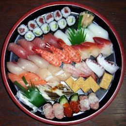

Sushi
Sushi is traditionally made with medium-grain white rice, though it can be prepared with brown rice or short-grain rice. It is very often prepared with seafood, such as squid, eel, yellowtail, salmon, tuna or imitation crab meat. Many types of sushi are vegetarian. It is often served with pickled ginger (gari), wasabi, and soy sauce. Daikon radish or pickled daikon (takuan) are popular garnishes for the dish. Sushi is sometimes confused with sashimi, a related dish in Japanese cuisine that consists of thinly sliced raw fish or occasionally meat Vinegar began to be added to the preparation of narezushi in the Muromachi period (1336–1573) for the sake of enhancing both taste and preservation. In addition to increasing the sourness of the rice, the vinegar significantly increased the dish's longevity, causing the fermentation process to be shortened and eventually abandoned. The primitive sushi would be further developed in Osaka, where over several centuries it became oshi-zushi or "hako-zushi"; in this preparation, the seafood and rice were pressed into shape with wooden (typically bamboo) molds.
It was not until the Edo period (1603–1868) that fresh fish was served over vinegared rice and nori. The particular style of today's nigirizushi became popular in Edo (contemporary Tokyo) in the 1820s or 1830s. One common story of nigirizushi's origins is of the chef Hanaya Yohei (1799–1858), who invented or perfected the technique in 1824 at his shop in Ryōgoku.[7] The dish was originally termed Edomae zushi as it used freshly caught fish from the Edo-mae (Edo or Tokyo Bay); the term Edomae nigirizushi is still used today as a by-word for quality sushi, regardless of its ingredients' origins
The earliest written mention of sushi in English described in the Oxford English Dictionary is in an 1893 book, A Japanese Interior, where it mentions sushi as "a roll of cold rice with fish, sea-weed, or some other flavoring".[10][11] There is an earlier mention of sushi in James Hepburn's Japanese-English dictionary from 1873,[12] and an 1879 article on Japanese cookery in the journal Notes and Queries